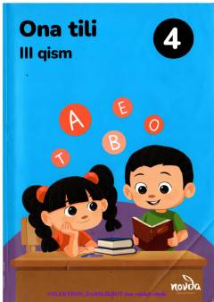

4O4-sinf o'quvchilari uchun ona tili fanidan darslikning uchinchi qismi.
Ushbu darslik umumiy o'rta ta'lim maktablarining 4-sinf o'quvchilari uchun mo'ljallangan bo'lib, ona tilidan bilimlarini mustahkamlashga xizmat qiladi. Kitobda turli qoidalar, grammatik tahlillar, lug'at boyligini oshiruvchi topshiriqlar va testlar berilgan. U o'quvchilarning og'zaki va yozma savodxonligini rivojlantirishga yordam beradi.